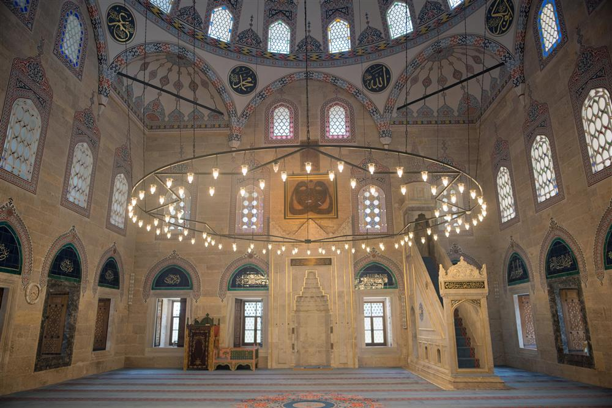

Amasya İkinci Beyazıt Külliyesi
Caminin batı yanında U planlı medrese bulunur. L planlı İmaret caminin doğusundadır. 1513 tarihli olan türbe kare planlı ve tek kubbelidir. Özgün inşa kitabesi bulunan türbe, düzgün kesme taş malzeme ile inşa edilmiştir. Türbe Şehzade Ahmed’in oğlu Şehzade Osman Çelebi için yapılmıştır. Caminin kuzeybatısında, medreseye yakın bir yerde bulunan tek katlı, kare planlı küçük yapı ise namaz vakitlerinin belirlendiği muvakkithanedir. İç mekân duvarları ve tavanı kalem işi bezemelerle süslü olan Muvakkithane, 1842 yılında Kapancı-zade Hacı Hüseyin Efendi tarafından yaptırılmıştır.

Amasya Hakkında...
Yeşilırmak vadisi Harşena Dağı eteklerine kurulan Amasya, 8 bin yılın üzerindeki eski tarihi boyunca krallık başkentliği yapmış, bilim adamları, sanatkarlar, şairler yetiştirmiş, şehzadelerin eğitim gördüğü bir belde olmuştur.
Kurtuluş savaşının başlangıç temelleri de Amasya'da atılmıştır. Amasya, tarihi ve kültürel zenginlikleri yanı sıra, özellikle Yeşilırmak kıyısına yapılmış Yalıboyu evleri ile dikkat çekmektedir.
Dünyanın en güzel Misket elması, kirazı, şeftalisi ve bamyasının üretildiği, tarih ve doğanın birlikte bulunduğu ilginç bir antik kent görmek istiyorsanız sıcakkanlı ve misafirperver Amasya sizi bekliyor.